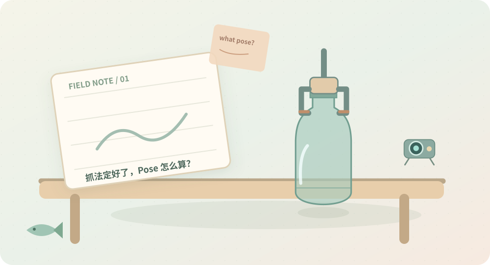
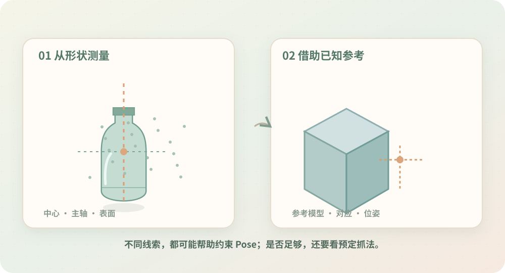
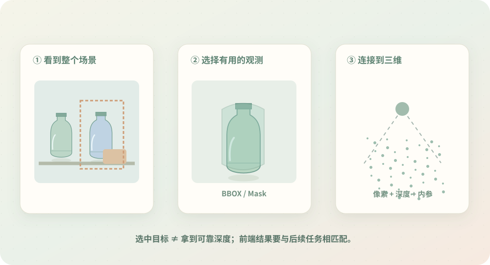
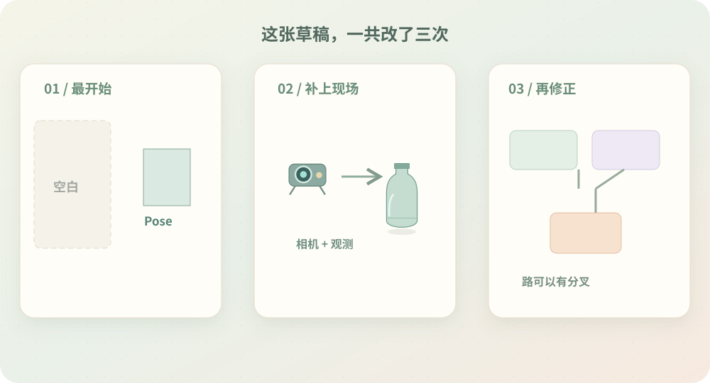

VOLUME 01 · STAGE 01 / PROLOGUE
抓法定好了，
Pose 怎么算？
最开始，只想把机器人抓取这件事变得简单一点。先不让算法决定怎么抓，只研究一件事：怎样把预定的抓取姿态放到真实空间里？
没想到从瓶子的中心与轴线开始，一路又研究到了真实相机、空间线索和直接抓取估计。

先从最简单的想法开始。THE STORY / 三段探索
一个问题，是怎样慢慢长出六个问题的？
这里不是技术路线的排行榜。每段研究都有自己的收获，而这些收获，又自然带来了下一段探索。
CHAPTER 01 · Q01–Q02
先从形状和已知信息入手。
瓶子有轴线，盒子有表面；既然这些是现成的空间线索，能不能直接量出 Pose？接着又想到，如果物体本来就是已知的，还能不能借助参考？
收获：找到第一批求解线索
CHAPTER 02 · Q03–Q04
等等，目标数据从哪里来？
前面默认目标点云已经存在。可相机看到的是整个场景，于是又得从二维定位开始，把需要的观测接回三维。
收获：一条从真实相机到 Pose 的路线接起来了
CHAPTER 03 · Q05–Q06
既然能求了，是否还有别的走法？
当物体形状不够稳定、参考信息也不足时，能不能让模型学习空间线索？最终又发现，目标其实是 Grasp Pose，不一定非要先恢复完整 Object Pose。
收获：求解结构不是唯一的流水线
A FIELD NOTE / 顺手改过几次的草稿
我原来只画了右半边。
先想到怎么求 Pose，才发现目标点云没有来路；补上相机输入后，又发现方法不必排成固定流水线。

✎ 这本手账的阅读方法
不需要先去读完六篇长笔记。沿着三个章节翻下去，就能理解当时的目标、遇到的问题，以及每一步为什么又继续探索。
NEXT · CHAPTER 01
物体形状，真的可以量出抓取姿态吗？
先从点云几何与已知参考开始。